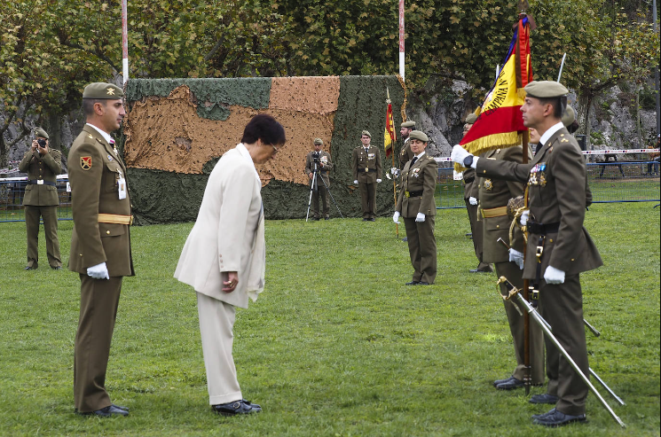

El pueblo Santoñes muestra su lealtad a la patria en una jura de bandera civil
Un total de 280 civiles se comprometieron ante el estandarte durante el acto celebrado este sábado por la mañana en la campa del Glacis
El pasado sabado 15 de Octubre los ciudadanos de la Villa Marinera de Santoña realizaron un juramento solemne ante el estander del Reino de España